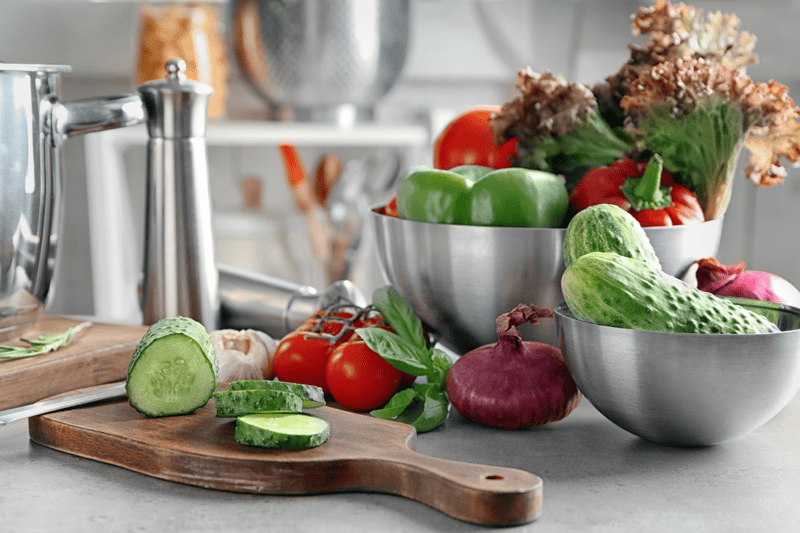

— Batch Cooking | Meal Prepping | The Rewards
I have always been a fan of batch cooking. Okay, maybe I used the word “always” too loosely. My culinary skills didn’t develop until I was in my mid-thirties, but since then, I have learned the art of batch cooking and meal prepping. Regardless of the size of your tribe (1, 2, 5, 10 people or even more), everyone can benefit from this. Before I dive into all the details, let’s look at what batch cooking means.

What Exactly Is Batch Cooking?
Short-Term Meal Prepping
- Short-term meal prepping means prepping all or most of your meals for the week and then storing them in the fridge or freezer partially or fully assembled. Your meals are then ready to take out and heat for your family dinner or throw into a lunch box. One of the best things about meal prep is it allows you to mix and match your prepared ingredients. Addition of herbs, condiments, and a few pantry staples also lets you turn one prepared dish into something new.
- Foods are usually eaten within 7 days.
Long-Term Meal Prepping
- Long-term meal prepping means to set aside a dedicated time to prep foods that will go straight into food storage (freezing, canning, refrigerator, dehydrating) for future consumption.
- Foods are usually eaten within 3 months. Some foods last longer, depending on what it is and how it is preserved. I tend to use the 3-month time frame for a lot of my meal-prepping foods to ensure that the nutrients and flavor will still be intact when I pull them out to enjoy them.
Benefits of Batch Cooking
Getting started with batch cooking does take a little work and planning, but the effort is well worth the benefits–and trust me, once you get used to it, you’ll regret not starting sooner.
- Healthier Meal Options – Batch cooking can help you stay on track if you have a particular food plan that you’re looking to adhere to. If we don’t have time to cook, if we are too exhausted to cook, we tend to reach for foods that we might not otherwise choose.
- Less Decision Fatigue – I don’t know about you, but there are days when I am done making decisions. I can’t think, and I don’t want to think about what to make for my meals. When those days arise, just knowing that I have different meal components already prepared reduces my stress.
- Less Effort at Meal Time – After working, playing, or relaxing all day, I may not have the energy or desire to whip together a meal. All hail… meal-prepping skills. Also, the week-long benefits to meal prepping minimize dirty dishes. Can I get a “whoop whoop”?
- Lower Food Cost – Eating seasonally and watching for sales saves money in the long run. Eating nutrient-dense meals prevents me from grazing all day on prepackaged foods. I am not referring to “junk” food, because I eat healthfully, but there is such a thing as healthy junk food, and it’s expensive.
- Minimized Food Waste – Batch cooking helps me to use products when they are fresh instead of letting them sit in the fridge for three to five days until I use them.
- A Sense of Pride and Security – When I batch cook, I feel a great sense of pride, knowing that I have healthy food options at our fingertips. It also gives me a sense of security (peace), knowing that no matter what happens on that day (tired, sick, busy, a pandemic, etc.) we are well taken care of.

Helpful Tools for Batch Cooking
I am going to share with you some of the tools I use when batch cooking. You don’t need all of them to get started, but if you end up enjoying the benefits of preparing food this way, you might want to invest. Good quality tools are worth their price tags, as they help you become more and more efficient in the kitchen.
Appliances | What I Use
Instant Pot
- If money and kitchen space are something you value, the Instant Pot is worth the investment.
- It’s seven appliances in one: slow cooker, pressure cooker (most models let you cook on high or low pressure), rice cooker, steamer, sauté/browning, yogurt maker, and warmer.
- I own the Instant Pot Duo 8 quart and then purchased a steamer basket (wish I had bought this sooner!).
- The 8-quart large capacity cooks for up to 8 people – perfect for families, and also great for MEAL PREPPING and batch cooking for singles and smaller households.
Waffle Machine
High-Powered Blender
- Blenders are a vital kitchen appliance, and a high-powered one (such as Vitamix or Blendtec) even more so. They are great for creating sauces, soups, plant-based milks, blended beverages, dips, and so forth.
- Please click the following link to read my post regarding Blenders – Why and What I Recommend.
- I own several Vitamix machines as well as a Blendtec.
Food Processor
- A food processor is meant for chopping, slicing, and grating solid items.
- Click (here) to read a post I did regarding what I recommend when looking for a food processor.
- I own the Breville BFP800BSXL Sous Chef Food Processor, Black Sesame. I have tested a handful of food processors throughout the last ten years, and this is hands down my favorite.
- It comes with 5 multi-function discs and 3 blades out of the box, 5.5-inch super-wide feed chute reduces the need to pre-cut most fruits and vegetables, BPA-free processing bowls; 16 cups (3.8L) large bowl; 2.5 cups (600ml) small processing bowl.
Food Storage Items
Vacuum Sealer
- Batch cooking will become easier, less expensive, and faster, as you will be able to equip and organize your freezer, with fresh food ready to be defrosted and served instead of freezer-burned foods filled with ice crystals which will probably end up in the trash can.
- They are not just for freezing. You can vacuum seal spices, flours, crackers…the list is endless.
- I have owned mine for eleven years, and I can’t find the model online. There are many to choose from, so look for one in your budget range. Costco usually has good deals.
- Be sure to label and date each sealed bag.
Freezer-Safe Mason Jars | Metal Rings | Freezer Tape
- I will choose glass over plastic if at all possible. Still, it’s so important to use only freezer-safe jars; otherwise, you run the risk of broken glass due to the expansion that happens naturally during the freezing process.
- I use metal rings instead of the plastic lids. Over time, I have noticed that when the jar is tipped over, and it has a plastic lid on, it leaks…which tells me they aren’t airtight.
- Freezer tape sticks to the jar when frozen. Whenever storing food, you should always label and date it–even on those days when you want to be lazy and you swear you won’t forget what it is.
Meal-Prep Containers and Glass Jars for the Fridge
- After preparing and cooking your meal-prep ingredients, transfer them in containers for the fridge. These will be used for foods that you batch cook and plan to eat within 5-7 days.
- Multi-compartment containers are best for storing full meals to go. Glass containers make the contents easier to see and can also go into the oven for reheating food (double-check that the brand you are purchasing is oven safe if you wish to reheat in them).
- Mason jars again are great for storing dips, veggie sticks, smoothies, and overnight oats in an airtight seal.
Miscellaneous Kitchen Tools
© AmieSue.com